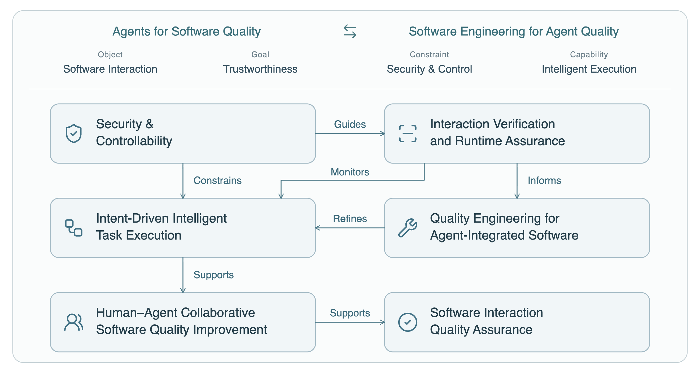
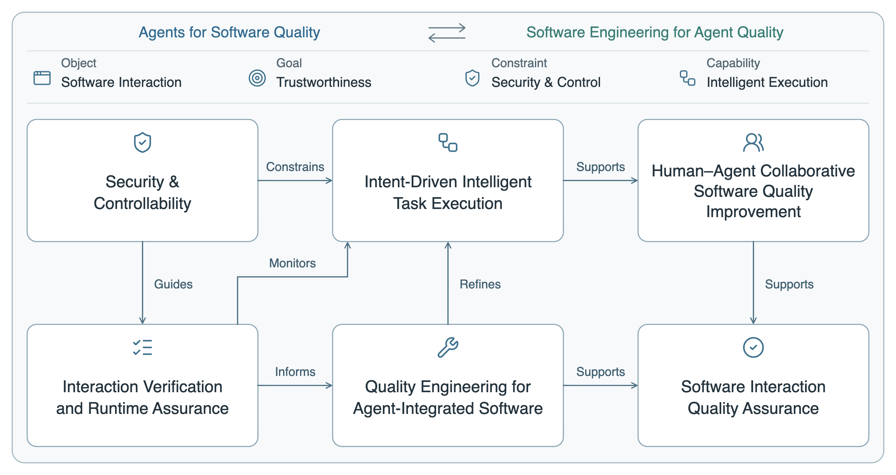
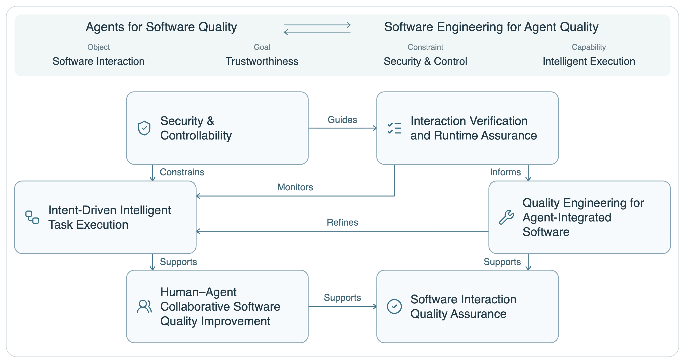

Research Scope · Peer Directions

A · Peer columns
Six equal cards in two columns, linked by concise relationship labels.

B · Peer grid
Six equal cards in a shared network, with every relationship labeled.

C · Peer network
Six peer directions arranged in a balanced ring without hierarchy.